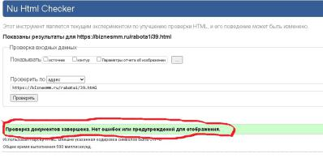
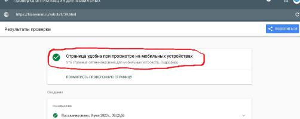
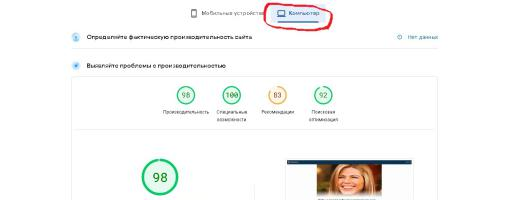
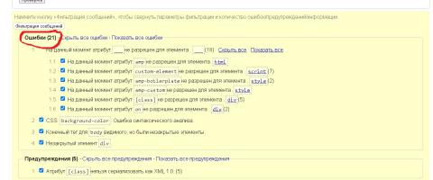

Давайте проведём тест сначала обыкновенной веб-страницы, а затем ее AMP версии.
Что такое Google AMP?
Google AMP — это технология публикации веб-сайтов с открытым исходным кодом, которые почти мгновенно загружаются на мобильных устройствах.
AMP означает «ускоренные мобильные страницы».
Google создал AMP, чтобы издатели и компании могли избежать медленной загрузки веб-страниц, которые расстраивают пользователей.
Множество мировых брендов внедрили Google AMP, чтобы лучше обслуживать свою целевую аудиторию и клиентов, включая таких гигантов, как Facebook, Baidu , Pinterest, Twitter , BBC News, The New York Times и The Washington Post.
Фактически, в настоящее время существует более 31 миллиона доменов , которые создали более 5 миллиардов AMP.
Тест обыкновенной веб-страницы
Возьмем любую страницу на этом сайте, к примеру эту:
Тестируем:
1. Проверка скорости загрузки страницы через сервис Pagespeed.web.dev
:
а. Для мобильных устройств:
б. Для компьютеров:
2. Проверка валидности HTML-кода через сервис Validator.w3.org:

3. Проверка удобства на мобильных через сервис Search.google.com/test/mobile-friendly:

Тест AMP страницы
Эта же страница в AMP версии:
Тестируем:
1. Проверка скорости загрузки AMP страницы через сервис Pagespeed.web.dev
:
а. Для мобильных устройств:
б. Для компьютеров:

2. Проверка валидности HTML-кода через сервис Validator.w3.org:

Единственно радует, что AMP версия лучше выглядит на мобильных устройствах.